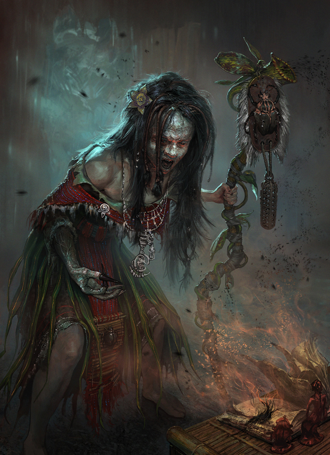

Mangkukulam

The Mangkukulam is a prominent figure in Filipino folklore, often depicted as a practitioner of witchcraft or dark magic, who uses spells, curses, and rituals to harm others. The term "mangkukulam" comes from the Filipino word kulam, which refers to the act of casting spells or hexes, typically with malicious intent. The Mangkukulam is considered a type of aswang (a general term for supernatural creatures in Filipino mythology), but it is specifically known for its witchcraft abilities rather than shape-shifting or monstrous features.
The Mangkukulam is feared for its ability to inflict physical and emotional harm through mystical means, often targeting people from a distance. Their powers, which are sometimes described as being derived from dark forces or evil spirits, allow them to curse, manipulate, and even control the lives of others, making them one of the most dreaded beings in Filipino myth.
Appearance
Unlike many other mythical creatures in Filipino folklore, the Mangkukulam does not necessarily possess a monstrous or terrifying physical form. Rather, a Mangkukulam appears outwardly as an ordinary person, often a woman, but they may have the ability to transform when engaging in their malevolent activities.
In some variations, the Mangkukulam is described as an older woman, often an outcast or someone who is isolated from the community, which fuels the belief that witches and practitioners of dark magic often live on the fringes of society. However, Mangkukulam can also be men and are typically seen as someone with deep knowledge of herbs, potions, and the occult. They may be perceived as having an eerie or unsettling presence, particularly when they are performing rituals, but their true power lies in their ability to wield magic and cast curses.
Abilities
The Mangkukulam is most well-known for its ability to curse or hex people. These curses are often cast from a distance, and the Mangkukulam does not need to be physically close to their victim in order to harm them. Their powers can manifest in several forms:
-
Hexing and Cursing: The Mangkukulam can cast spells to bring bad luck, illness, or death to their victims. These curses are often invoked through rituals involving various objects, such as dolls (which represent the victim), nails, hair, or other personal belongings. The use of these items creates a link between the Mangkukulam and the person being cursed.
-
Witchcraft and Rituals: Mangkukulams are said to perform rituals that involve chants, incantations, and the use of mystical objects such as herbs, oils, potions, and bones. These rituals are performed under specific moon phases or other auspicious times to maximize the effectiveness of the curse. They may also use magical symbols or sigils to enhance their power.
-
Sending Illness or Pain: One of the most common abilities attributed to a Mangkukulam is the power to cause physical harm, often through the use of "kulam," a term for a type of curse. This might involve the Mangkukulam sending an invisible force to harm their victim, causing them to feel ill, weak, or to experience agonizing pain. Victims may suffer from ailments that appear mysteriously, such as fever, headaches, or stomach problems, with no clear medical explanation.
-
Pagtawid or “Mind Control”: The Mangkukulam can also use their powers to manipulate the thoughts and emotions of their target. This form of control may involve causing someone to act against their will or to experience emotional distress, confusion, or irrational fear. It is believed that they can “plant” ideas in a victim’s mind through spells or magical influence.
-
Warding and Protection: Some versions of the Mangkukulam are also capable of providing protection or healing magic, though this is more commonly associated with benevolent practitioners of magic (often referred to as albularyo or babaylan). However, in the case of the Mangkukulam, even healing might come at a cost, or might only be offered in exchange for something dark or sinister.
Methods of Magic
The Mangkukulam often uses a variety of tools and techniques in their witchcraft, some of which include:
-
Voodoo-like Dolls: Often, the Mangkukulam will create a doll or effigy that represents the person they wish to harm. The doll is typically made using objects or materials linked to the person, such as hair, nails, or clothes. By poking, stabbing, or burning the doll, the Mangkukulam can cause pain or suffering to the person it represents.
-
Herbal Mixtures: The Mangkukulam is said to possess knowledge of potent herbs, potions, and concoctions that can be used to induce illness, cause misfortune, or bind people to the caster’s will. These mixtures are often brewed using ingredients that are considered rare or sacred, and they might involve secret incantations to activate their effects.
-
Nailing or Binding: In some folklore, the Mangkukulam may use a physical object, such as a nail, to pin the curse onto a victim. The act of nailing an object to the victim's property or their clothing is believed to tie the curse to them, causing it to take effect.
Vulnerabilities and Defenses
Despite their powerful abilities, the Mangkukulam has several weaknesses that can be exploited. Here are some of the common ways to defend against or protect oneself from a Mangkukulam:
-
Exorcism and Rituals: The best way to deal with a Mangkukulam is through counter-magical rituals performed by an albularyo (traditional healer or witch doctor) or a babaylan (shamanic priestess). These rituals often involve prayers, incantations, and the use of protective charms to dispel the curse.
-
Salt and Ash: Just as with other supernatural entities in Filipino folklore, salt and ash are considered effective in repelling the Mangkukulam. These substances are believed to cleanse or purify, and may be used in rituals or placed around the home to protect against curses.
-
Breaking the Link: If a person suspects that they have been cursed by a Mangkukulam, one of the key ways to stop the curse is to sever the connection between the witch and their victim. This might involve finding the object that connects the victim to the Mangkukulam (such as a doll or a personal item) and destroying it.
-
Protective Charms and Amulets: Many people carry or wear amulets and talismans (known as anting-anting) for protection against witchcraft. These objects are believed to ward off evil spirits, including witches like the Mangkukulam.
-
Banging Pots and Making Noise: Similar to other Filipino supernatural creatures, making loud noises—such as banging pots or making other sudden, loud sounds—can sometimes drive away malevolent entities, including the Mangkukulam, and break the curse they have placed.
Cultural Significance
The Mangkukulam occupies a significant place in Filipino culture, particularly in rural areas where belief in magic and the supernatural is more pronounced. The figure of the Mangkukulam reflects broader cultural themes of justice, retribution, and the consequences of immoral behavior. In some instances, accusations of being a Mangkukulam are linked to social tensions or personal vendettas. In Filipino communities, witchcraft and the fear of witches can sometimes lead to gossip and suspicion, particularly when misfortune strikes a family or a group.
The Mangkukulam also represents the dark side of magical practice. While the babaylan or albularyo is often seen as a healer, the Mangkukulam is associated with malevolent magic, representing the potential for magic to be used for harm. In this sense, the Mangkukulam embodies both the fascination and fear that the Filipino people have towards the mystical and unknown.